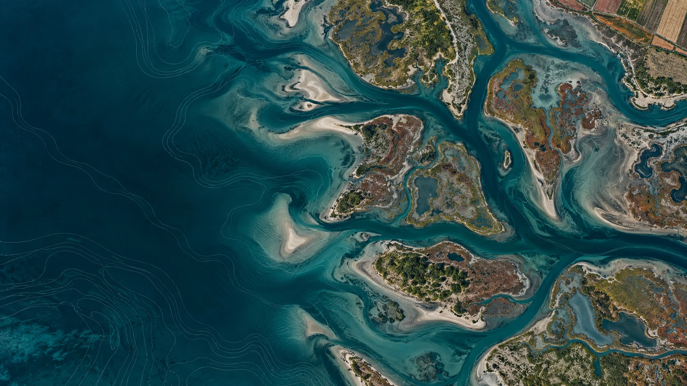
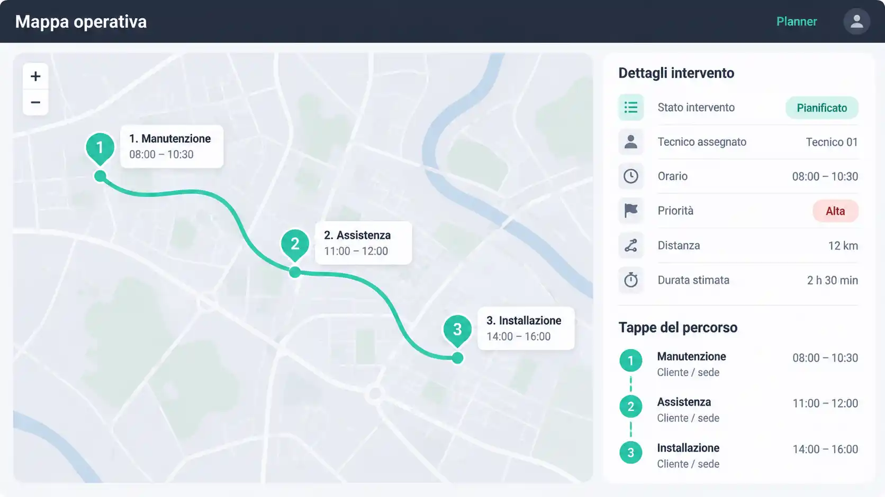
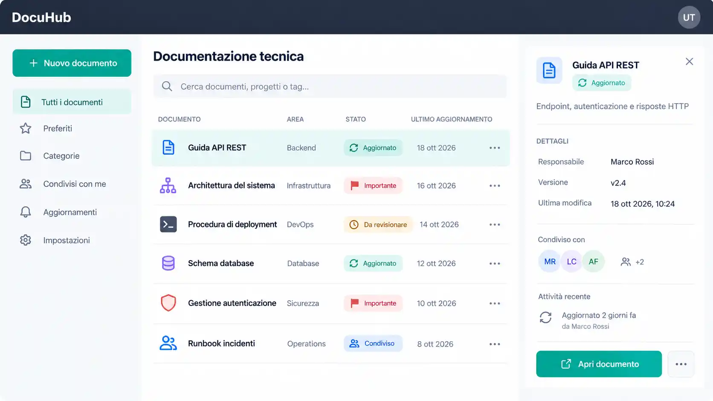
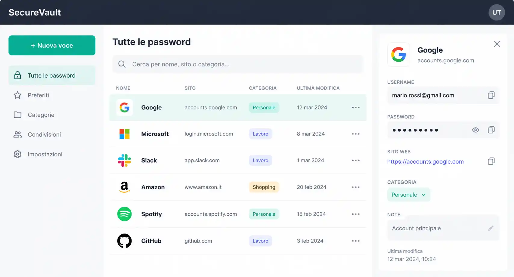
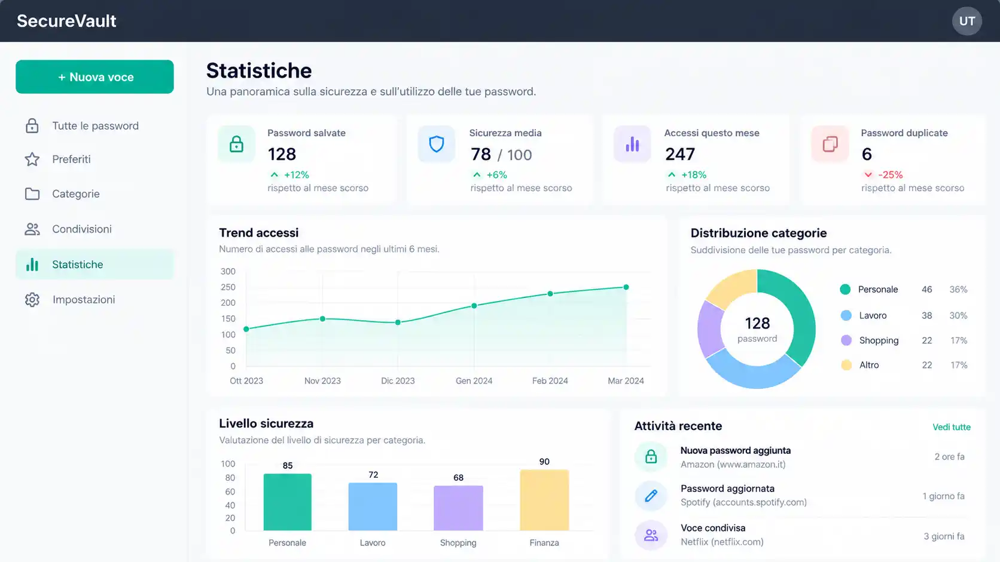

Meno tempo perso.
Più controllo, sul campo.
Pianifica gli interventi. Collega le informazioni.
Dai alle tue persone un unico punto di riferimento.

Il problema non è il piano.
È quello che succede dopo.
Un imprevisto basta a cambiare la giornata. Quando le informazioni sono sparse, ogni risposta diventa una ricerca, una chiamata, un’attesa.
Un tecnico è assente.
Il piano va rivisto. Chi è disponibile?
Serve un dato del cliente.
È in una chat. Qual è l’informazione aggiornata?
Manca del materiale.
L’intervento si ferma. La squadra cerca una soluzione.
La procedura è cambiata.
Il tecnico chiama un collega. Il lavoro si interrompe.
Meno informazioni da ricostruire. Più continuità nel lavoro.
Gli strumenti si parlano.
Le informazioni restano collegate.

Una giornata, una visione condivisa.
Planner, calendario e assegnazioni collegano chi coordina alle persone sul campo. Il carico di lavoro e gli aggiornamenti trovano posto nello stesso ambiente.
- Attività e assegnazioni dei tecnici
- App mobile e geolocalizzazione
- Task, notifiche e comunicazioni

Il sapere dell’azienda, a portata di mano.
La knowledge base mette procedure e documentazione nel loro contesto. Chi interviene trova un riferimento chiaro; chi ha esperienza riceve meno interruzioni.
- Documentazione versionata e varianti
- Suggerimenti con revisione strutturata
- Paragrafi globali riutilizzabili

Accessi chiari. Dati sotto controllo.
Permessi e viste personalizzabili aiutano ogni persona a lavorare sulle informazioni pertinenti. Credenziali, contatti e documenti sensibili hanno strumenti dedicati.
- Password e contact manager criptato
- Vault per documenti sensibili
- Segmentazione dettagliata della visibilità

Il lavoro reale diventa leggibile.
Raccogli tempi e note spese all’interno della suite. Consulta dati operativi, analisi e report per capire dove approfondire e come orientare le decisioni.
- Tempi e note spese integrati
- Dashboard, analisi e report
- Integrazioni da valutare insieme
Dati, persone, attività.
Un unico filo.
Un riferimento condiviso per chi organizza e per chi interviene. Meno duplicazioni e informazioni discordanti, più autonomia nelle decisioni quotidiane.
Prima il campo.
Poi il software.
anni di esperienza diretta nell’assistenza tecnica
Gli strumenti devono seguire
il tuo modo di lavorare.
Interventi da programmare, tecnici da coordinare, informazioni da trovare. LagoonField nasce da queste esigenze concrete.
Flussi, integrazioni e personalizzazioni si valutano con chi sviluppa la suite, partendo dalla tua organizzazione.
Le prossime evoluzioni della suite. Funzionalità previste, non presentate come già disponibili.
AI e supporto agentico
È previsto un layer AI per consultare le procedure in modo mirato e supportare il lavoro operativo. Disponibilità e modalità saranno definite con l’evoluzione del prodotto.
Magazzini e materiali sul campo
La gestione dei magazzini e dei magazzini mobili dei tecnici è in sviluppo, con l’obiettivo di collegare disponibilità dei materiali e operatività.
Flussi operativi sempre più completi
Rapportini, ticketing, urgenze, formazione, modelli e statistiche avanzate, certifiche e gestione amministrativa rientrano nelle evoluzioni previste della suite.